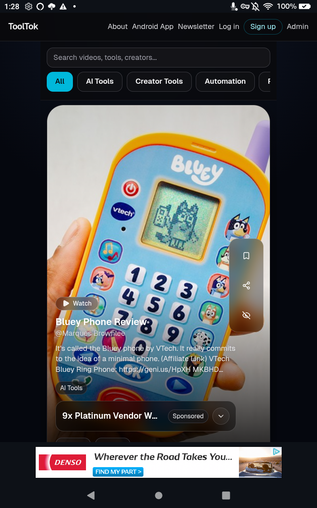
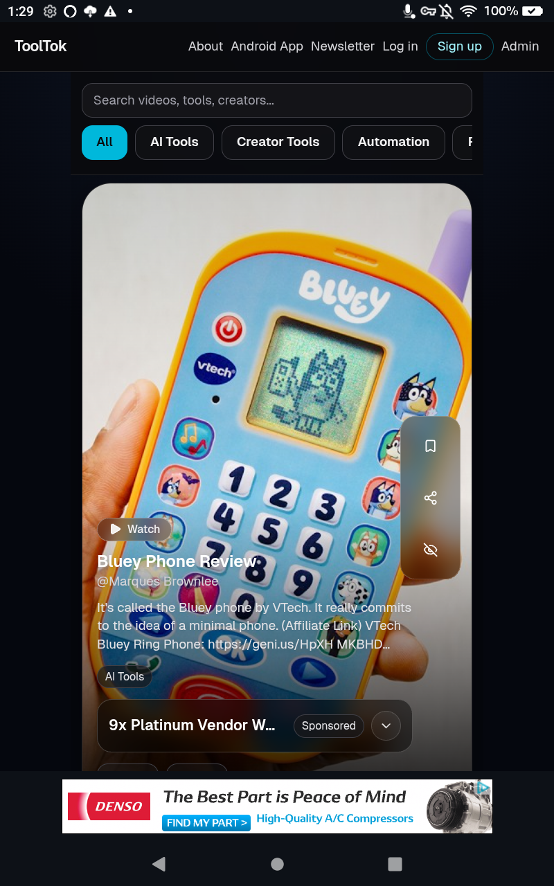
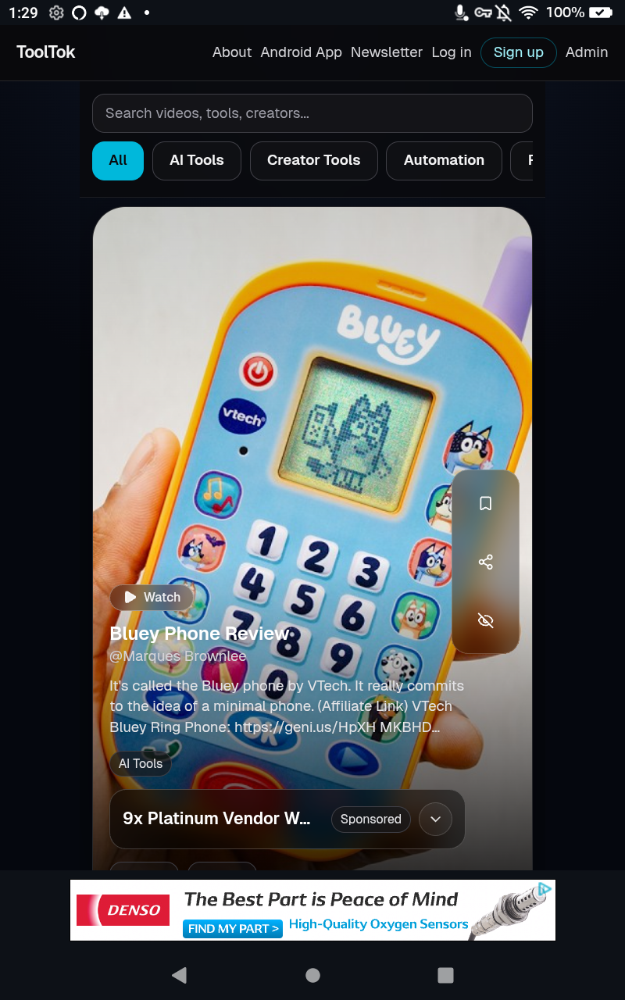
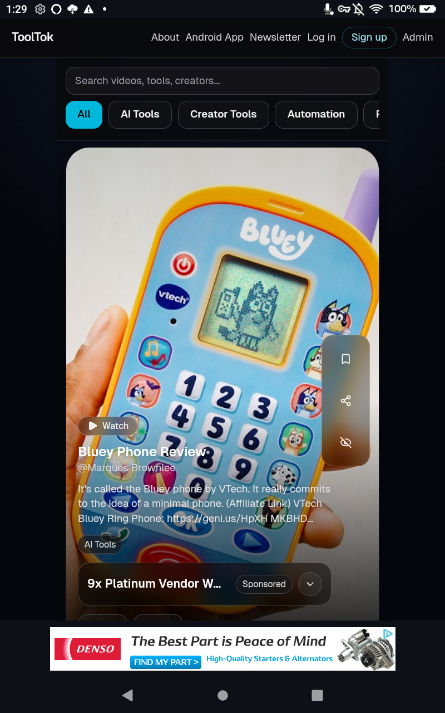
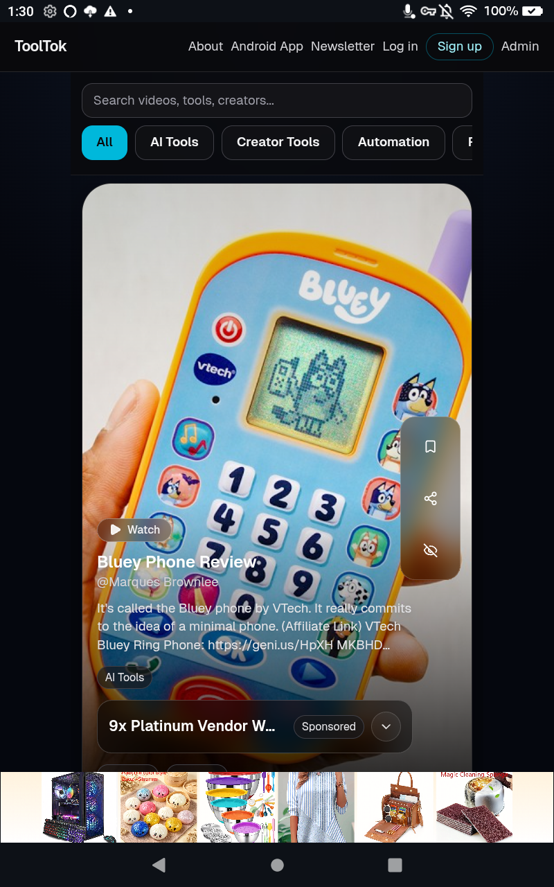
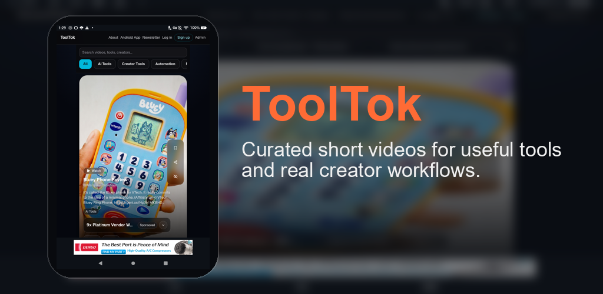

Practical video picks
Find high-signal videos that help you build better workflows faster.
ToolTok helps you find practical short-form videos about tools, systems, and workflows that actually save time. Open it on Android or use the web version anytime.

ToolTok is a short-video discovery app for people who want practical ideas they can use right away. The feed is focused on tools, automation, creator systems, and workflow shortcuts.
Find high-signal videos that help you build better workflows faster.
Browse, explore, and open related links easily from your Android phone.
The app mirrors the latest live ToolTok experience available on the web.
This short promo clip includes voiceover and matches the current Android app listing media.
Fresh device screenshots showing the current ToolTok Android experience.




Official app marketing assets for GitHub, social sharing, and store listing use.

Use the Android APK for a dedicated mobile experience, or open the hosted web app in any browser.